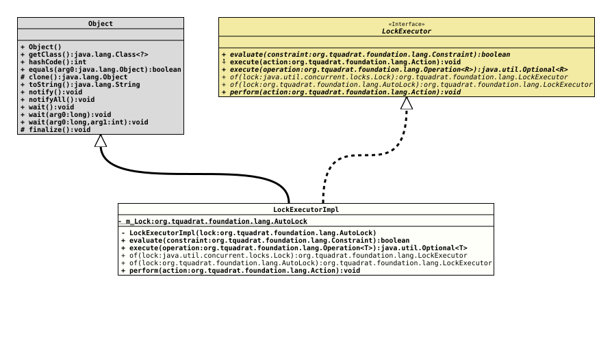

Class LockExecutorImpl
java.lang.Object
org.tquadrat.foundation.lang.internal.LockExecutorImpl
- All Implemented Interfaces:
LockExecutor
@ClassVersion(sourceVersion="$Id: LockExecutorImpl.java 1185 2026-04-06 10:26:47Z tquadrat $")
@API(status=INTERNAL,
since="0.1.0")
public final class LockExecutorImpl
extends Object
implements LockExecutor
The implementation of
LockExecutor.- Author:
- Thomas Thrien (thomas.thrien@tquadrat.org)
- Version:
- $Id: LockExecutorImpl.java 1185 2026-04-06 10:26:47Z tquadrat $
- Since:
- 0.1.0
- UML Diagram
-

UML Diagram for "org.tquadrat.foundation.lang.internal.LockExecutorImpl"
{kind=link}
-
Field Summary
Fields -
Constructor Summary
ConstructorsModifierConstructorDescriptionprivateLockExecutorImpl(AutoLock lock) Creates an instance ofLockExecutorImpl. -
Method Summary
Modifier and TypeMethodDescriptionbooleanevaluate(Constraint constraint) Evaluates the given condition.<T> Optional<T> Executes the given operation.static final LockExecutorCreates a newLockExecutorfrom the givenLockinstance.static final LockExecutorCreates a newLockExecutorfrom the givenAutoLockinstance.voidPerforms the given action after obtaining the lock.Methods inherited from class Object
clone, equals, finalize, getClass, hashCode, notify, notifyAll, toString, wait, wait, waitMethods inherited from interface LockExecutor
execute
-
Field Details
-
m_Lock
-
-
Constructor Details
-
LockExecutorImpl
Creates an instance ofLockExecutorImpl.- Parameters:
lock- The lock.
-
-
Method Details
-
evaluate
Evaluates the given condition.- Specified by:
evaluatein interfaceLockExecutor- Parameters:
constraint- The constraint.- Returns:
- The result of the evaluation of the condition.
- Throws:
AutoLock.ExecutionFailedException- The evaluation failed for some reason.
-
execute
Executes the given operation.- Specified by:
executein interfaceLockExecutor- Type Parameters:
T- The type of the operation's result.- Parameters:
operation- The operation.- Returns:
- An instance of
Optionalthat holds the result of the operation. - Throws:
AutoLock.ExecutionFailedException- The operation failed for some reason.
-
of
Creates a newLockExecutorfrom the givenLockinstance.- Parameters:
lock- The lock.- Returns:
- The new
LockExecutor.
-
of
Creates a newLockExecutorfrom the givenAutoLockinstance.- Parameters:
lock- The lock.- Returns:
- The new
LockExecutor.
-
perform
Performs the given action after obtaining the lock.
This differs from
LockExecutor.execute(Operation)asActiondoes not return something, and a warning regarding "Result of assignment expression used" can be avoided in case theactionis used to set an attribute.- Specified by:
performin interfaceLockExecutor- Parameters:
action- The action.- Throws:
AutoLock.ExecutionFailedException- The action failed for some reason.
-